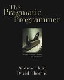
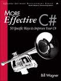
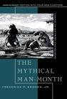
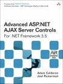

Programming Bookshelf
|  |
The Pragmatic ProgrammerStraight from the programming trenches, The Pragmatic Programmer: From Journeyman to Master cuts through the increasing specialization and technicalities of modern software development to examine the core process?taking a requirement and producing working, maintainable code that delights its users. It covers topics ranging from personal responsibility and career development to architectural techniques for keeping your code flexible, easy to adapt, and reuse. Hunt, A. & Thomas, D. (1999). The Pragmatic Programmer: From Journeyman to Master. Retrieved from http://pragprog.com/titles/tpp/the-pragmatic-programmer. |
Test Driven DevelopmentQuite simply, test-driven development is meant to eliminate fear in application development. While some fear is healthy (often viewed as a conscience that tells programmers to "be careful!"), the author believes that byproducts of fear include tentative, grumpy, and uncommunicative programmers who are unable to absorb constructive criticism. When programming teams buy into TDD, they immediately see positive results. They eliminate the fear involved in their jobs, and are better equipped to tackle the difficult challenges that face them. TDD eliminates tentative traits, it teaches programmers to communicate, and it encourages team members to seek out criticism However, even the author admits that grumpiness must be worked out individually! In short, the premise behind TDD is that code should be continually tested and refactored. Kent Beck teaches programmers by example, so they can painlessly and dramatically increase the quality of their work. Beck, K. (2003). Test-driven development: by example. Retrieved from http://books.google.com/books?id=gFgnde_vwMAC&dq=test+driven+development&source=gbs_navlinks_s. |
|
|  |
More Effective C#An authority on C# presents fifty specific, practical ways for developers to improve their C# programming skills, focusing on the features, tools, and applications of C# 3.0--including LINQ, generics, and multi-threading--and includes helpful suggestions on how to avoid common pitfalls and problems with the programming language. Wagner, B. (2008). More Effective C#: 50 Specific Ways to Improve Your C#. Retrieved from http://books.google.com/books?id=AOjdAAAACAAJ&dq=More+Effective+C%23&cd=1. |
|  |
The Mythical Man-MonthFew books on software project management have been as influential and timeless as The Mythical Man-Month. With a blend of software engineering facts and thought-provoking opinions, Fred Brooks offers insight for anyone managing complex projects. These essays draw from his experience as project manager for the IBM System/360 computer family and then for OS/360, its massive software system. Now, 20 years after the initial publication of his book, Brooks has revisited his original ideas and added new thoughts and advice, both for readers already familiar with his work and for readers discovering it for the first time. Brooks, FP. (1995). The mythical man-month: essays on software engineering. Retrieved from http://books.google.com/books?id=G6YDQwAACAAJ&dq=Mythical+Man+Month&cd=1. |
|  |
Advanced ASP.Net AJAX Server ControlsMicrosoft .NET Development Series "Supported by the leaders and principal authorities of core Microsoft technologies, this series has an author pool that combines some of the most insightful authors in the industry with the lead software architects and developers at Microsoft and the developer community at large." - Don Box Architect, Microsoft "This is a great resource for professional .NET developers. It covers all bases, from expert perspective to reference and how-to. Books in this series are essential reading for those who want to judiciously expand their knowledge base and expertise." -John Montgomery Principal Group Program Manager, Developer Division, Microsoft "This foremost series on .NET contains vital information for developers who need to get the most out of the .NET Framework. Our authors are selected from the key innovators who create the technology and are the most respected practitioners of it." -Brad Abrams Group Program Manager, Microsoft ASP.NET AJAX server controls can encapsulate even the most powerful AJAX functionality, helping you build more elegant, maintainable, and scalable applications. This is the first comprehensive, code-rich guide to custom ASP.NET AJAX server controls for experienced ASP.NET developers. Unlike other books on ASP.NET AJAX, this book focuses solely on server control development and reflects the significant improvements in ASP.NET 3.5 AJAX and the latest Visual Studio 2008 features for streamlining AJAX development Adam Calderon and Joel Rumerman first review the core Microsoft AJAX Library and JavaScript techniques needed to support a rich client-side experience. Next, they build upon these techniques showing how to create distributableAJAX-enabled controls that include rich browser-independent JavaScript client-side functionality. The authors thoroughly explain both the JavaScript and .NET aspects of control development and how these two distinct environments come together to provide a foundation for building a rich user experience using ASP.NET AJAX. Calderon, A. & Rumerman, J. (2008). Advanced ASP.NET AJAX server controls for .NET framework 3.5. Retrieved from http://books.google.com/books?id=b2-QJgAACAAJ&dq=advanced+asp.net+ajax+server+controls&cd=1. |
Leisure Bookshelf
Enders GameWhen humanity is under threat from an alien race, Ender Wiggin, at the age of six, leaves his family on Earth to journey to the Belt. There he enters Battle School, where his life is strictly disciplined by mind games and computer mock-battles fought in deadly earnest. Instinct, compassion and genius make Ender unequalled. But while he trains, the invasion approaches fast. And Ender will be pushed to the limits of endurance, for he is a unique destiny. Winner of both the Hugo and Nebula awards. 'The Ender saga stands as one of the very few serious moral tales set among the stars... enthralling... an extraordinary talented author.' Card, OS. (1985). Ender's Game. Retrieved from http://books.google.com/books?id=Z5QtUpmbcDwC&dq=enders+game&source=gbs_navlinks_s. |